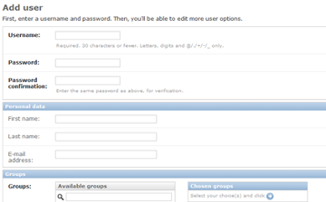
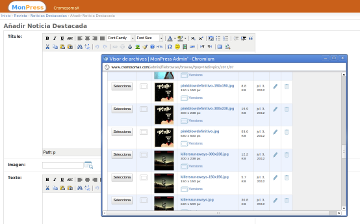
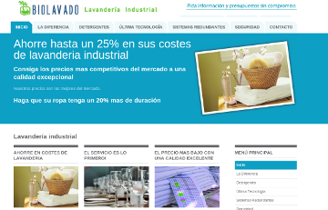
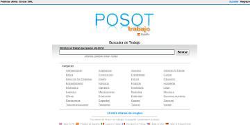
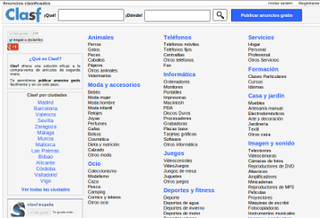
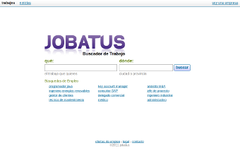
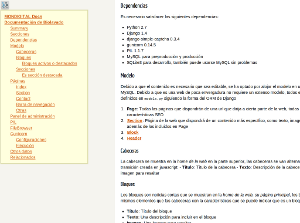
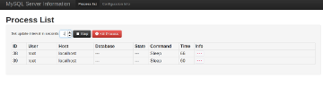
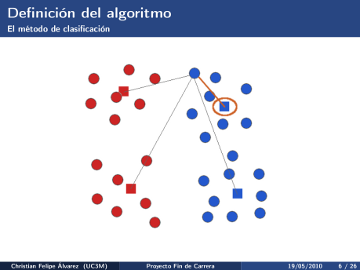

Portfolio
Web Projects
UDo: a trouble ticketing system
From Sept.2012 until Now — Aurigae / Telefónica Digital

- Contribution
- Backend development (analysis, design and development) and frontend collaboration.
- Main Technologies
- Python, Django, MongoDB, django-rest-framework, git, github, jQuery, angularjs
- Description
- UDo is trouble ticketing and work orders system of Telefónica Digital. It permits customers creating tickets and work orders which will be attended by operators as incidences. It also allows users to identify common problems and symptoms.
MonPress: a django based blogging system
Year: 2012 — Company: Mondigital S.L. — Examples: CromosomaX, Cultture

- Contribution
- Analysis and design, development, system administration, migration from previous version.
- Main Technologies
- Python, Django, django-filebrowser, python image library (PIL), MySQL, TinyMCE, jQuery, uwsgi, nginx, memcached, git.
- Description
- This project was defined to get a light, secure and customized blogging system. It involves not only the blogging system design and development but also the migration of the previous data for several Wordpress blogs. It was developed with Django web framework and several django applications, taking the advantage of the django auth/admin system to easily manage users and let them publish new content.
Biolavado
Year: 2012 — Company: Mondigital S.L. — Biolavado

- Contribution
- Analysis and design, development, system administration, migration from previous version.
- Main Technologies
- Python, Django, MySQL, jQuery, gunicorn, nginx, git.
- Description
- This is a simple company website which consist of some static content and a simple contact form. It had been developed with Joomla and its owner wanted a more secure and faster solution, moreofer he still wanted to be able to easily edit some elements such as texts and tags. The website was developed with django, taking the advantage of django admin/auth application.
Posot
When: 2010 - 2012 — Company: Mondigital S.L. — Posot

- Contribution
- Analysis and design, development, system administration, maintenance, database queries optimization, crawlers development, migration from previous version.
- Main Technologies
- Python, Werkzeug, Jinja2, MySQL, Sphinx Search Server, jQuery, uwsgi, Nginx, git.
- Description
- Posot and Cozot sites are search engines for jobs, homes, cars and used products. They are defined to help users to find what they are looking for and they are multilingual (depending on the domain). This project also involves web crawlers and xml/csv processors, needed to get and index the classifieds ads.
Clasf
Year: 2011 - 2012 — Company: Mondigital S.L. — Clasf

- Contribution
- Analysis and design, development, system administration, maintenance, database design and implementation.
- Main Technologies
- Python, Werkzeug, Jinja2, MySQL, Sphinx Search Server, jQuery, twitter-bootstrapt, uwsgi, Nginx, git.
- Description
- Clasf is a website which let users publish ads for free, bringing them another place to buy and sell used products. It is multilingual (based on domain) and includes some xml/csv processors to get ads from online shops.
Jobatus
Year: 2011 - 2012 — Company: Mondigital S.L. — Jobatus

- Contribution
- Analysis and design, development, system administration, maintenance, database design and implementation, crawlers development.
- Main Technologies
- Python, Django, Django-SocialAuth, MySQL, Sphinx Search Server, jQuery, mod-wsgi, Apache, git.
- Description
- Jobatus is a job search engine and a place where companies can directly upload job offers for free and just in one step. Jobatus includes the possibility to sign up with Facebook and Linkedin to let people upload their offers as quick as possible.
Miscellaneous
svimpad
Year: 2012 — Github project
- Contribution
- Sole developer
- Main Technologies
- Python, Vim, pygments, springpad-api
- Description
- As Vim is my favourite editor and springpad is a service to take notes and collect information, I developed a simple vim plugin to directly publish noteson on springpad from vim. The extension automatically colours syntax if the note is a source code file.
jquery-h-nav-index
Year: 2012 — Github project

- Contribution
- Sole developer
- Main Technologies
- Javascript, jQuery, CSS
- Description
- This project is a simple jQuery plugin developed to generate an index from headers from a HTML document and automatically link to those headers (as internal links).
Pymyinfo
Year: 2012 — Github project

- Contribution
- Sole developer
- Main Technologies
- Python, Flask, MySQL, jQuery, twitter-bootstrap
- Description
- A simple Flask / jQuery based MySQL processes monitor. This project brought me the opportunity to play with twitter-bootstrapt framework and to practice with other technologies.
Kmes
Year: 2009 - 2010 — Carlos III de Madrid University (Project as Master Thesis) — Source code and abstract, master thesis (in Spanish).

- Contribution
- Sole developer
- Main Technologies
- Evolution Strategies, K-Means, Java, GNU-Octave, GNU-Plot
- Description
- Study and implementationof some methods and experiments to find a measure of distance for prototype-based classifiers, such as K-Means, by means of evolution strategies.